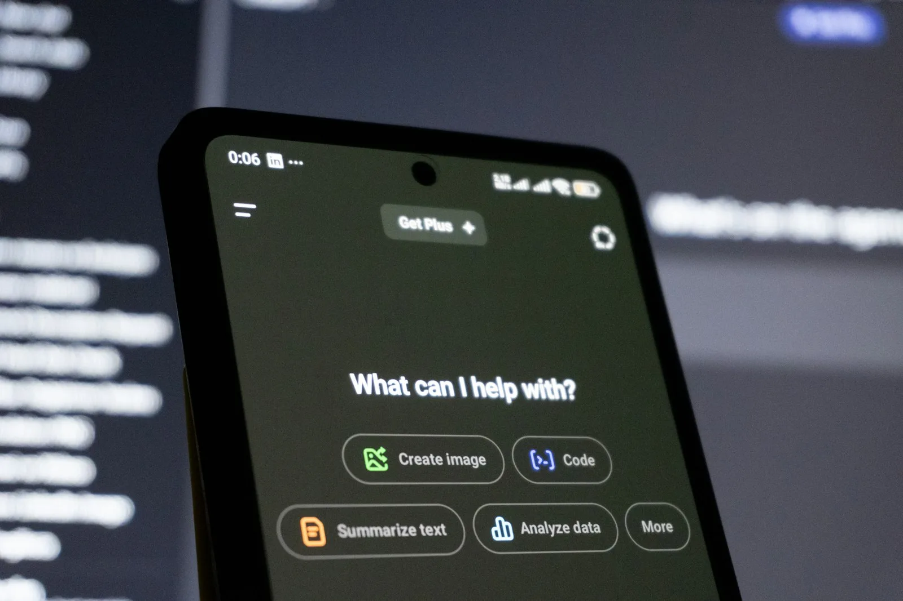
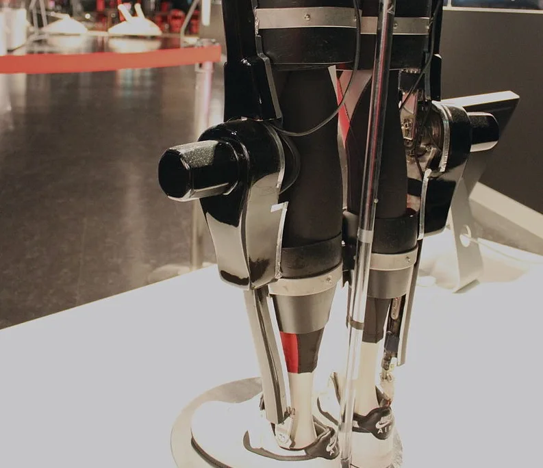
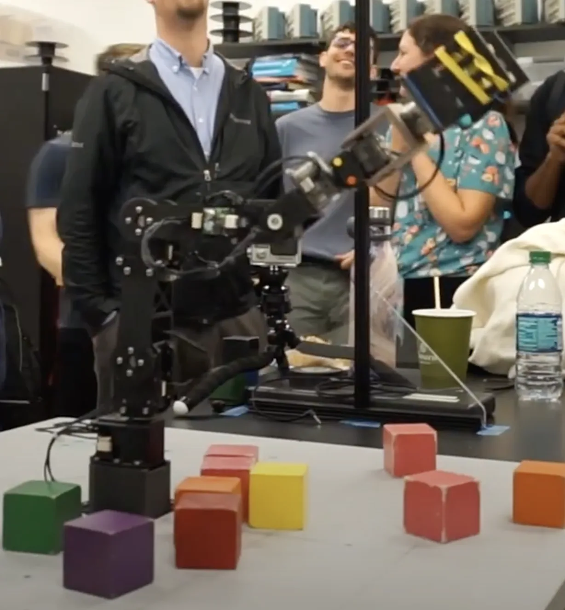
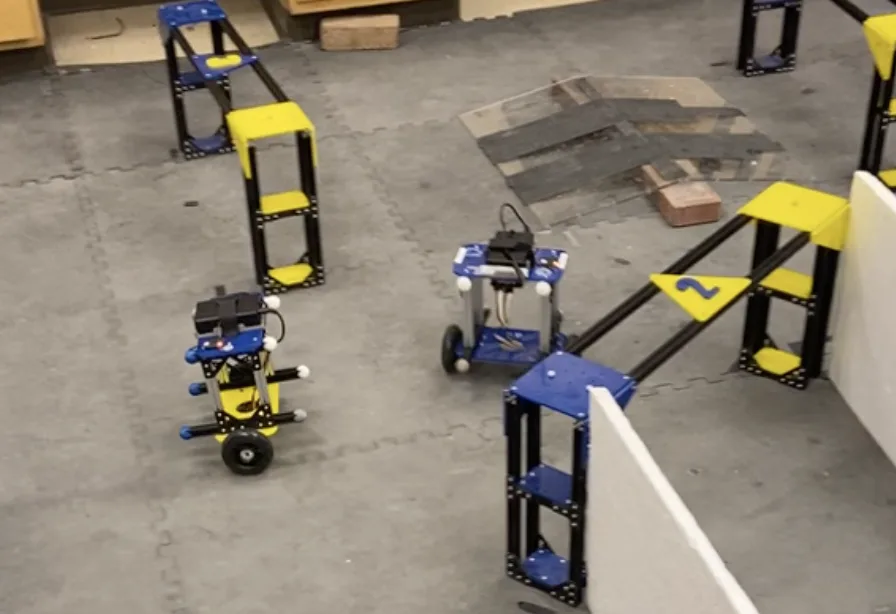
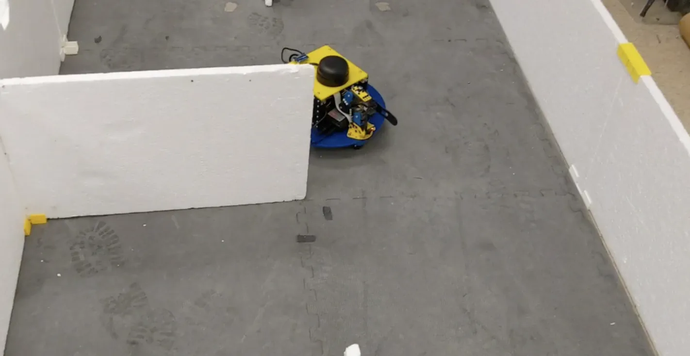
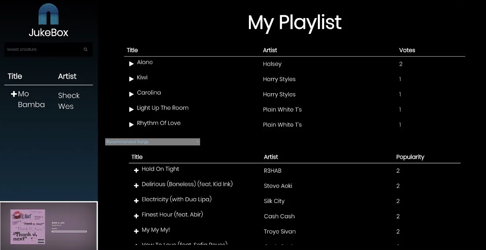
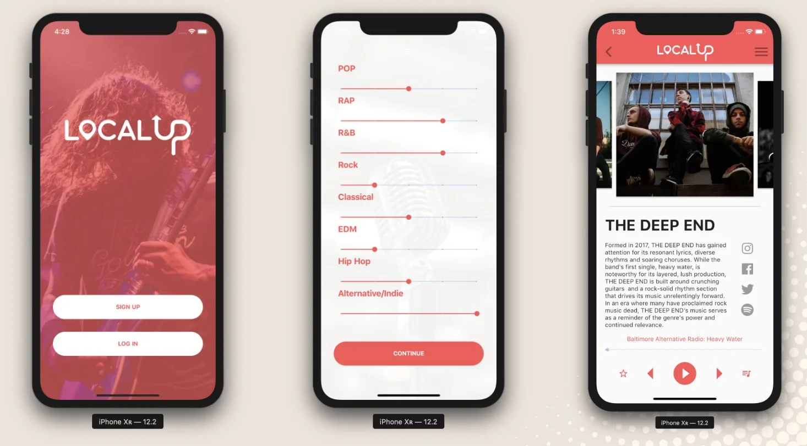
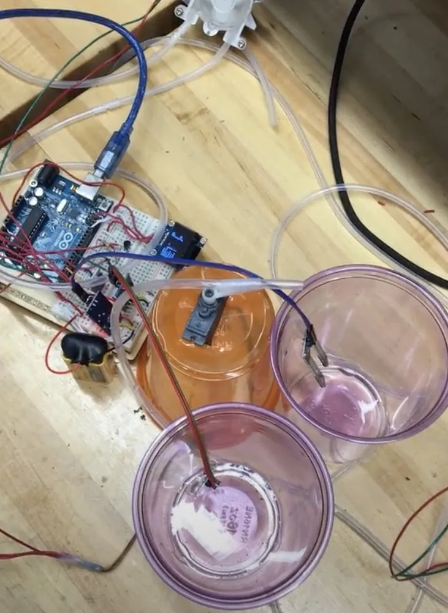
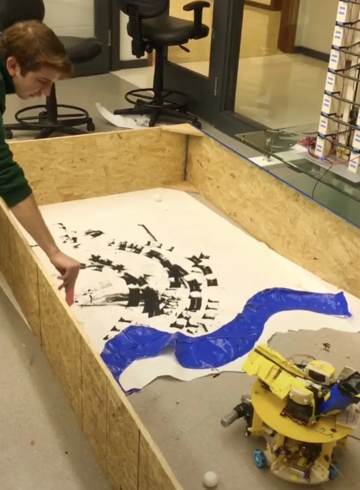

IEEE Standard 1872.1 Contribution
Helped develop IEEE Standard 1872.1 for Robot Ontology: Robot Task Representation.
AI + ROBOTICS
I enjoy building software that's useful, especially at the intersection of robotics, AI, and embedded systems. My recent work spans medical devices, autonomous systems, and personal tools for evaluating local LLM deployments.
Brian Fogelson is a robotics and AI engineer based in Baltimore, Maryland.
COMMUNITY INVOLVEMENT
My favorite projects involve helping my community through mentoring, education, and shared standards.
Helped develop IEEE Standard 1872.1 for Robot Ontology: Robot Task Representation.
Mentor and judge for FRC Team 4541, the Cavineers.
Taught an Intro to Engineering class focused on human factors, culminating in a robot arm controlled by wearable sensors with Arduino.
Served as president of the HKN/IEEE student chapter at Johns Hopkins University.
TIMELINE
Selected milestones that shaped how I approach software, robotics, and engineering leadership.
Building InferGrade as a decision tool for choosing quantized local LLM setups. It captures benchmark evidence on real hardware and turns those results into recommendations, comparisons, and shareable proof.

Building locally hosted AI tooling to support internal engineering workflows.
I am now leading work that spans medical-device prototyping, embedded software, and AI tooling.
Built engineering-operations software for autonomous maritime systems.
Led software efforts spanning autonomy, engineering operations, and system validation for unmanned maritime platforms.
Completed an M.S. in Robotics, focusing on AI, ML, controls, and human-centered systems.
Taught a human-factors-focused intro to engineering course where students built a robot arm controlled by wearable sensors and Arduino.
Developed and evaluated a decentralized task-allocation algorithm for resource-constrained autonomous systems.
Compared deep RL methods for taxi assignment, including QMIX, and published the work.
Built a real-time face-mask detection system using transfer learning on ResNet50 to classify masked, improperly masked, and unmasked faces from webcam video.

Compared EMG-based approaches for anticipating gait transitions, including LSTM RNN models.

Integrated camera-based perception with arm control to detect and manipulate target objects.

Designed and tuned a self-balancing robot with closed-loop control for stable real-time operation.

Built an autonomous robot that mapped unknown mazes and navigated to goal points using SLAM.
Began M.S. work in Robotics, focusing on controls, perception, learning, and human-centered systems.
Worked on machine learning approaches for anomaly detection in industrial control systems and smart-home environments.
Double majored in Electrical Engineering and Computer Engineering, with minors in Entrepreneurship and Management, Robotics, and Computer Science. Charles A. Conklin Scholar for Distinguished Academic Achievement, General Honors, and Departmental Honors.
Led the student chapter and helped organize engineering-centered community and professional programming.

Built a webapp and iOS app to crowdsource music playlists at events with voting and automatic per-genre music library importing.


Built a bot for automated plant care using sensors, actuators, and embedded control.
Helped improve sensing and mechanical design for a hand device aimed at supporting motor-skill recovery after brain injury.

Used vision to detect an opposing robot target and fire ping pong balls, while defensive behavior avoided incoming shots and wrote an SOS message in Morse code.
Began undergraduate studies in electrical and computer engineering.
Worked on electrical design for commercial buildings in Baltimore, Maryland.
Finished high school in Baltimore and started moving toward engineering and robotics work.
WORK EXPERIENCE
Key Technologies · Baltimore, MD · Apr 2024 - Present
Weather Gage Technologies · Annapolis, MD · Jan 2021 - Apr 2024
Northrop Grumman · Baltimore, MD (Remote) · Jun 2020 - Aug 2020
Booz Allen Hamilton · Annapolis Junction, MD · Jun 2018 - Aug 2019
SKILLS